12 张图对应 12 个禅道任务，来自本地隔离环境的真实浏览器截图；演示数据为临时数据。图片未补齐时下方会显示占位提示。
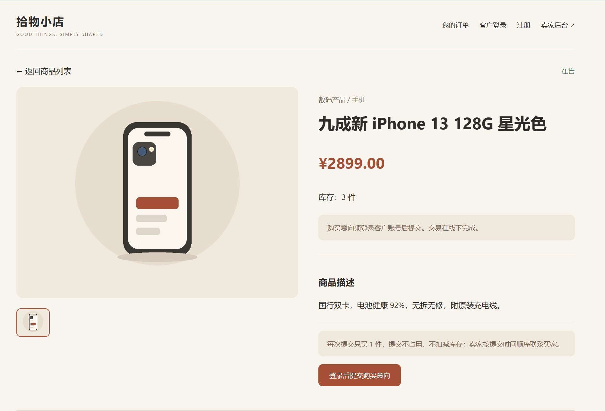
待补充：截图/01_未登录详情无下单入口.jpg')">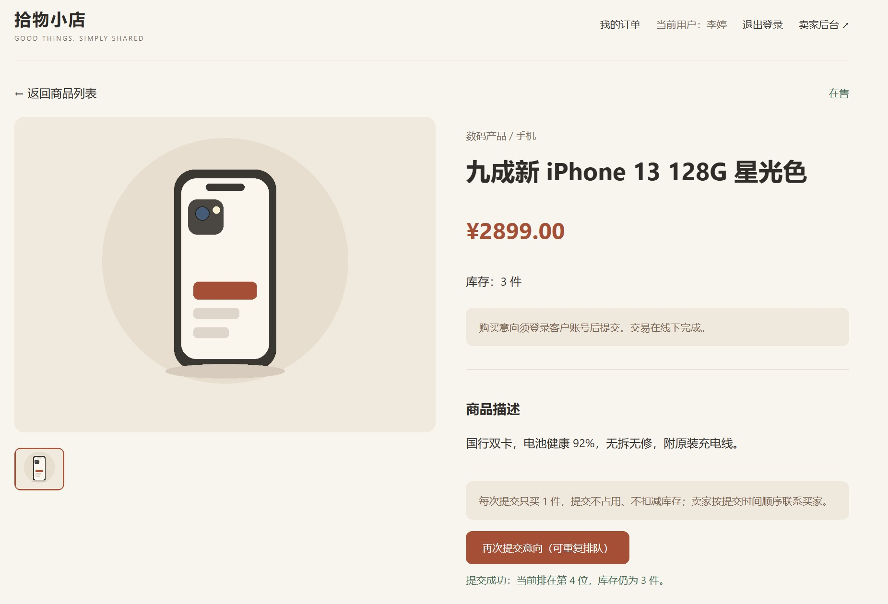
待补充：截图/02_登录后提交成功排队位次.jpg')">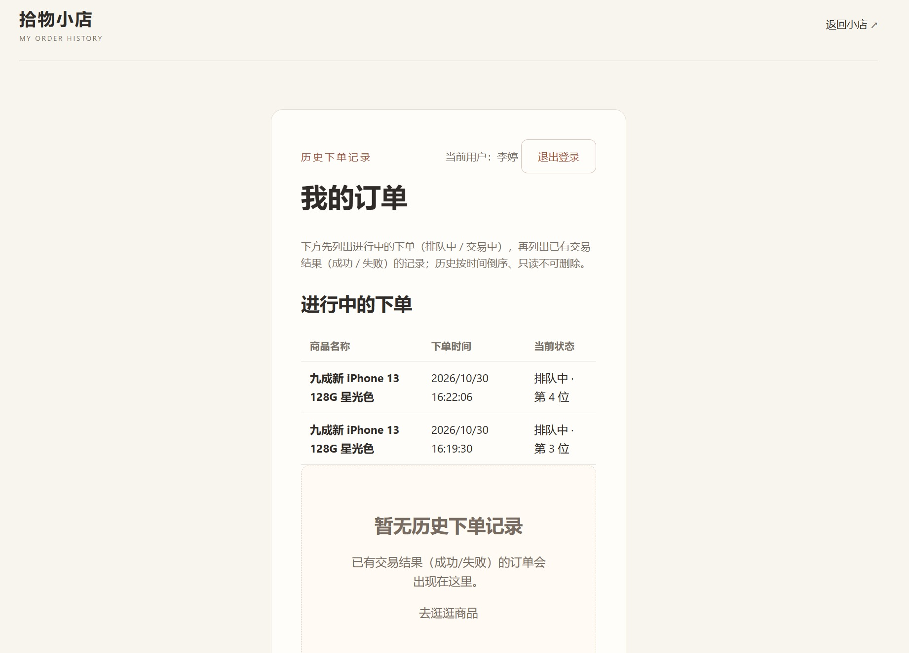
待补充：截图/03_我的订单进行中两条记录.jpg')">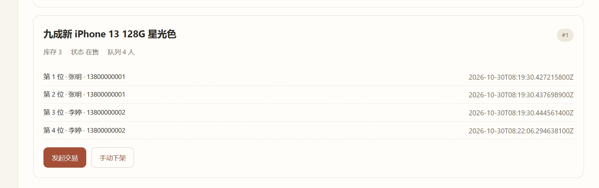
待补充：截图/04_后台交易管理队列.jpg')">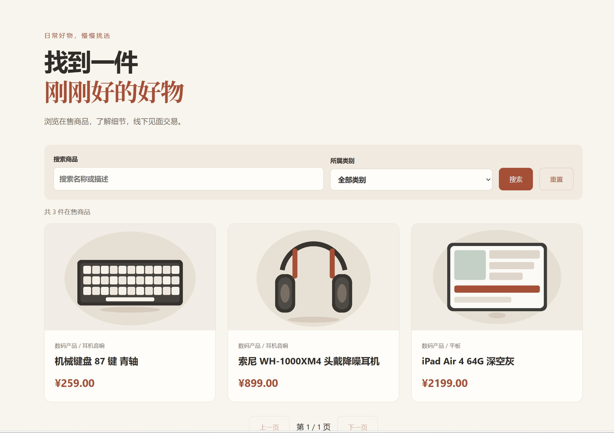
待补充：截图/05_发起交易后列表不可见.jpg')">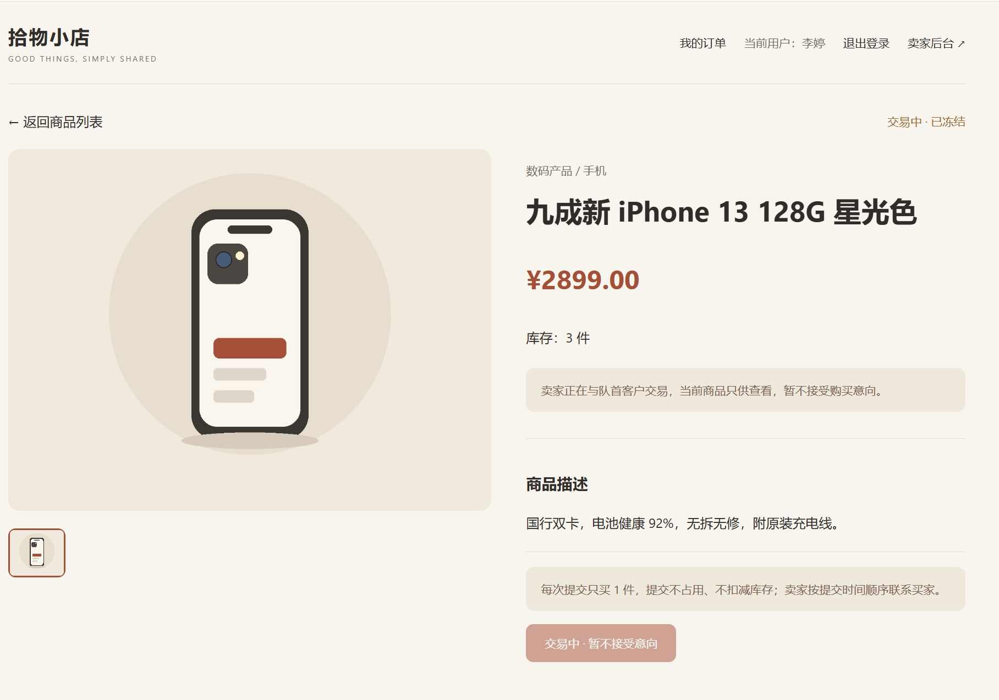
待补充：截图/06_冻结商品直链只读.jpg')">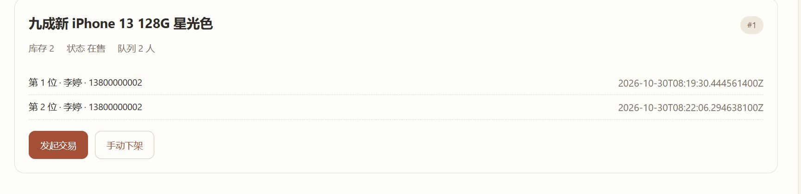
待补充：截图/07_标记成功库存减一.jpg')">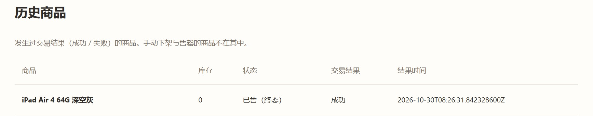
待补充：截图/08_库存归零已售终态.jpg')">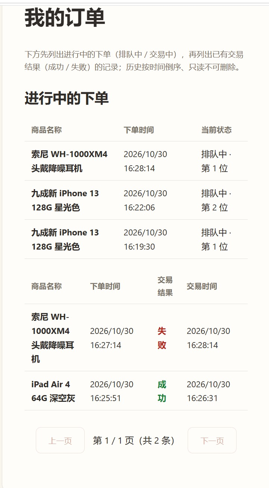
待补充：截图/09_失败重新排队到队尾.jpg')">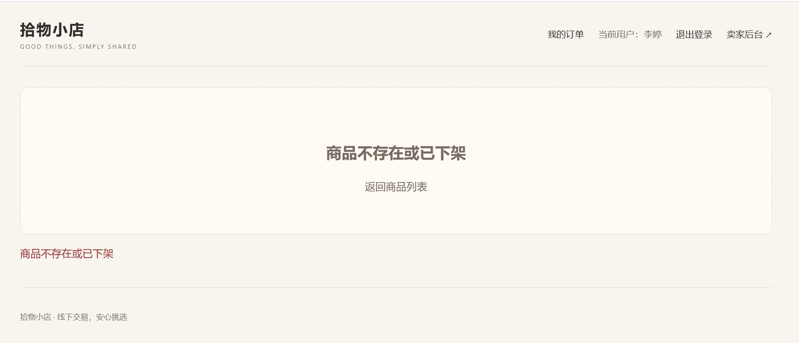
待补充：截图/10_手动下架买家端无法访问.jpg')">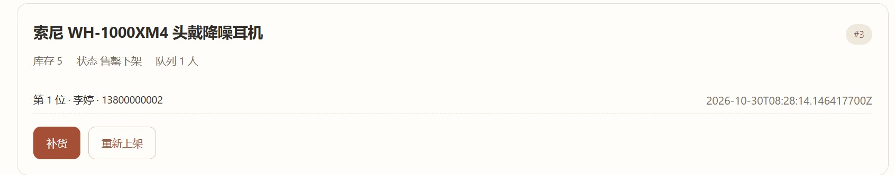
待补充：截图/11_售罄补货仍为下架.jpg')">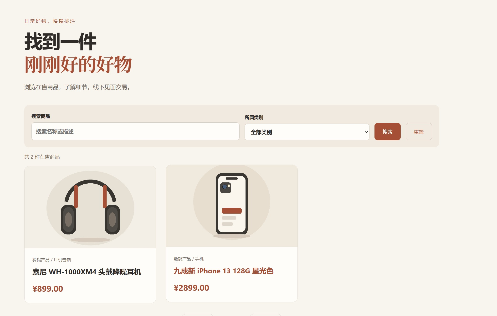
待补充：截图/12_重新上架恢复在售.jpg')">